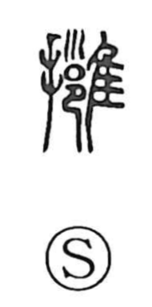

擁

Uncategorized
Kun: | On: you
to embrace ・ to hold ・ to support ・ to protect
Explanation
擁 is a phono-semantic character built on 雍 as its phonetic core. In old forms, 雍 depicts a falconer pressing a bird to his chest—a vivid image of cradling and control. With the addition of the hand element, the graph becomes 擁, concretely expressing the act of taking something in the arms. From this, it naturally means to hold and embrace, and by extension to protect by keeping close. The Shuowen already glosses it as “to embrace,” in harmony with this image-based origin.